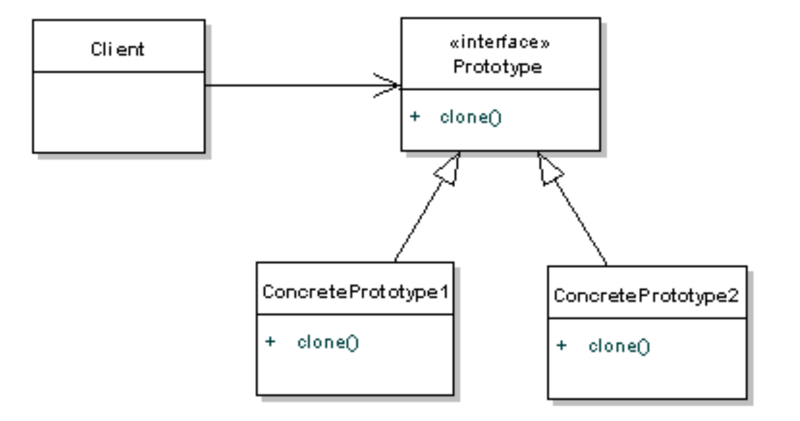

🏗️ PATTERN 1 : BUILDER
✅ Comment le reconnaître
Trucs et astuces :
- ✅ Méthodes chainables qui retournent
this - ✅ Construction progressive (étape par étape)
- ✅ Méthode finale
build()oucreate() - ✅ Utile pour objets avec beaucoup de paramètres optionnels
- ✅ Évite les constructeurs avec 10+ paramètres
Phrase clé : "Je reconnais Builder grâce aux méthodes chainables qui retournent this, la construction progressive, et la méthode finale build()."
📊 Schéma théorique

🖼️ Schéma de l'exercice
💻 Code principal (structure)
1. L'Objet Complexe + Builder Interne (SimpleRobot.java)
package be.vinci.etudiant;
public class SimpleRobot implements Robot {
// Attributs 'final' car l'objet est construit une seule fois
private final int shield;
private final int freq;
private int life;
private final String nom;
private final int canon;
// Constructeur PRIVE : seul le Builder peut l'utiliser
public SimpleRobot(RobotBuilder robotBuilder) {
this.shield = robotBuilder.shield;
this.freq = robotBuilder.freq;
this.nom = robotBuilder.name;
this.canon = robotBuilder.canon;
this.life = robotBuilder.life;
}
// ... Getters ...
// --- INNER CLASS STATIC : LE BUILDER ---
public static class RobotBuilder {
// Valeurs par défaut
public int canon = 1;
public int shield = 1;
public int freq = 100;
public int life = 100;
public String name;
public RobotBuilder(String name) {
this.name = name;
}
// Méthodes Fluent (Chainables) -> return this
public RobotBuilder setCanon(int canon) {
this.canon = canon;
return this;
}
public RobotBuilder setShield(int shield) {
this.shield = shield;
return this;
}
public RobotBuilder setFreq(int freq) {
this.freq = freq;
return this;
}
public RobotBuilder setLife(int life) {
this.life = life;
return this;
}
// Méthode finale de construction
public Robot build(){
return new SimpleRobot(this);
}
}
}2. Le Client / Director (PatternRobots.java)
public class PatternRobots {
public static void main(String[] args) {
// Utilisation fluide du Builder
Robot robot1 = new SimpleRobot.RobotBuilder("Robot-1")
.setCanon(10)
.setShield(2)
.setFreq(100)
.setLife(100)
.build();
// Création d'un autre robot
Robot robot2 = new SimpleRobot.RobotBuilder("Robot-2")
.setCanon(9)
.setShield(3)
.setFreq(90)
.build();
fight(robot1, robot2);
}
}🎨 PATTERN 2 : DECORATOR
✅ Comment le reconnaître
Trucs et astuces :
- ✅ Classe implémente interface ET contient attribut de cette même interface
- ✅ Construction en couches :
new Decorator1(new Decorator2(component)) - ✅ Finit par le component de base (PAS null !)
- ✅ Chaque décorateur ajoute une fonctionnalité
Phrase clé : "Je reconnais Decorator car il implémente une interface ET contient un attribut de cette même interface."
📊 Schéma théorique

🖼️ Schéma de l'exercice
💻 Code principal (structure)
1. Le Décorateur Abstrait (Wrapper)
Il implémente Robot ET contient un Robot. Il sert de base pour tous les autres décorateurs.
package be.vinci.etudiant.Decorator;
import be.vinci.etudiant.Robot;
public class Decorator implements Robot {
private Robot robot; // L'objet décoré (Composition)
public Decorator(Robot robot) {
this.robot = robot;
}
// Délégation par défaut : on passe l'appel à l'objet interne
@Override
public int getCanon() { return robot.getCanon(); }
@Override
public int getShield() { return robot.getShield(); }
@Override
public int getFreq() { return robot.getFreq(); }
@Override
public String getName() { return robot.getName(); }
@Override
public int diffLife(int i) { return robot.diffLife(i); }
}2. Décorateurs Concrets (Exemples)
Ils ajoutent ou modifient le comportement en appelant super.methode().
// --- LifeDecorator : Modifie la gestion de la vie ---
public class LifeDecorator extends Decorator {
private final int coef;
public LifeDecorator(Robot robot, int coef) {
super(robot);
this.coef = coef;
}
@Override
public int diffLife(int i) {
// Modification du comportement avant d'appeler le parent
return super.diffLife(i/coef);
}
}
// --- ConcreteDecoratorBouclier : Modifie le canon (Exemple) ---
public class ConcreteDecoratorBouclier extends Decorator {
private final int coef;
public ConcreteDecoratorBouclier(Robot robot, int coef) {
super(robot);
this.coef = coef;
}
@Override
public int getCanon(){
return coef * super.getCanon();
}
}3. Utilisation (Main)
On "emballe" le robot dans des couches de décorateurs.
// Création du robot de base (Component)
Robot robotBase = new SimpleRobot.RobotBuilder("Robot-1").build();
// Ajout d'une couche Bouclier
Robot robotAvecBouclier = new ConcreteDecoratorBouclier(robotBase, 4);
// Ajout d'une couche Vie sur un autre robot
Robot robot2 = new SimpleRobot.RobotBuilder("Robot-2").build();
Robot robotAvecVie = new LifeDecorator(robot2, 4);🏭 PATTERN 3 : ABSTRACT FACTORY
✅ Comment le reconnaître
Trucs et astuces :
- ✅ Interface avec une ou plusieurs méthodes de création abstraites.
- ✅ Chaque ConcreteFactory crée une famille d'objets liés ou cohérents entre eux.
- ✅ Le client ne connait que l'interface abstraite de la factory et des produits.
- ✅ Dans cet exercice, les factories encapsulent la complexité du Builder et du Decorator.
Phrase clé : "Je reconnais Abstract Factory grâce à l'interface qui définit les méthodes de création, permettant aux sous-classes de décider quelle famille d'objets concrets instancier."
📊 Schéma théorique
(Le schéma théorique standard montre souvent plusieurs méthodes de création par factory)

🖼️ Schéma de l'exercice
🧐 Comparaison Théorie vs Exercice
| Concept Théorique (Pattern) | Nom dans l'Exercice | Rôle dans l'exercice |
|---|---|---|
| Abstract Factory (Interface) |
AbstractFactory |
Définit le contrat createRobot() que toutes les usines doivent respecter. |
| Concrete Factory (Classe) |
TankFactoryGrosseBertaFactoryPicVertFactory |
Implémentent la méthode de création. Elles contiennent la "recette" spécifique (combinaison Builder + Decorator) pour créer un type de robot précis. |
| Abstract Product (Interface) |
Robot |
L'interface commune que tous les objets créés par les factories doivent implémenter. |
| Concrete Product (Classe) |
(Objets dynamiques) Ex: ConcreteDecoratorCanon |
Le résultat final retourné par la factory. Dans ce cas complexe, c'est souvent un robot de base "emballé" dans un décorateur. |
| Factory Method (Méthode) |
createRobot() |
La méthode abstraite dans l'interface, implémentée par les factories concrètes. |
💻 Code principal (structure)
1. L'Interface de la Factory Abstraite
package be.vinci.etudiant.AbstractFactory;
import be.vinci.etudiant.Robot;
public interface AbstractFactory {
// Le contrat : toute usine doit savoir créer un Robot
Robot createRobot();
}2. Les Factories Concrètes
Chaque factory encapsule la logique complexe (Builder + Decorator) pour créer un type de robot prédéfini.
// --- TankFactory : Crée un robot type "Tank" (canon moyen, bonne défense) ---
package be.vinci.etudiant.AbstractFactory;
import be.vinci.etudiant.Decorator.ConcreteDecoratorCanon;
import be.vinci.etudiant.Robot;
import be.vinci.etudiant.SimpleRobot.RobotBuilder;
public class TankFactory implements AbstractFactory {
@Override
public Robot createRobot() {
// 1. Utilise le Builder pour la base
Robot base = new RobotBuilder("tank").setCanon(8).setLife(100).setShield(10).setFreq(90).build();
// 2. Utilise le Decorator pour améliorer le canon
return new ConcreteDecoratorCanon(base, 8);
}
}
// --- GrosseBertaFactory : Crée un robot type "Artillerie lourde" ---
package be.vinci.etudiant.AbstractFactory;
import be.vinci.etudiant.Decorator.ConcreteDecoratorCanon;
import be.vinci.etudiant.Robot;
import be.vinci.etudiant.SimpleRobot.RobotBuilder;
public class GrosseBertaFactory implements AbstractFactory {
@Override
public Robot createRobot() {
Robot base = new RobotBuilder("grosse berta").setCanon(20).setLife(100).setShield(20).setFreq(50).build();
return new ConcreteDecoratorCanon(base, 20);
}
}
// --- PicVertFactory : Crée un robot type "Rapide et fragile" ---
package be.vinci.etudiant.AbstractFactory;
import be.vinci.etudiant.Decorator.LifeDecorator;
import be.vinci.etudiant.Robot;
import be.vinci.etudiant.SimpleRobot.RobotBuilder;
public class PicVertFactory implements AbstractFactory {
@Override
public Robot createRobot() {
Robot base = new RobotBuilder("pic vert").setCanon(2).setLife(100).setShield(1).setFreq(200).build();
// Utilise un décorateur de vie différent ici
return new LifeDecorator(base, 1);
}
}🪶 PATTERN 4 : FLYWEIGHT
✅ Comment le reconnaître
Trucs et astuces :
- ✅ Pool d'objets partagés (Map, cache, Hashtable)
- ✅ Factory pour récupérer les instances via une CLÉ (String, ID...)
- ✅ État intrinsèque (partagé/invariant) vs extrinsèque (unique/variant)
- ✅ But : Optimiser la mémoire en évitant de créer des doublons.
Phrase clé : "Je reconnais Flyweight grâce au pool d'objets partagés (Hashtable) dans une Factory. On réutilise les objets existants au lieu d'en créer des nouveaux."
📊 Schéma théorique

🖼️ Schéma de l'exercice
🧐 Comparaison Théorie vs Exercice
| Concept Théorique | Nom dans l'Exercice | Explication |
|---|---|---|
| FlyweightFactory (Le Gestionnaire) |
AbstractFactoryFlyweigt |
C'est la classe qui contient la Hashtable. Elle gère le cache. Si on demande "tank", elle vérifie si l'usine Tank existe déjà avant de la retourner. |
| Flyweight (Interface Partagée) |
AbstractFactory |
C'est le type commun de tous les objets qu'on met dans le cache. |
| ConcreteFlyweight (Objet Partagé) |
TankFactoryPicVertFactory... |
Ce sont les objets "lourds" ou répétitifs qu'on ne veut créer qu'une seule fois. Ici, on partage l'instance de l'usine elle-même. |
| Client | PatternRobots (Main) |
Il configure le cache au démarrage (put) et demande des objets via la factory (create). |
💻 Code principal (structure)
1. La Factory avec Cache (FlyweightFactory)
package be.vinci.etudiant.AbstractFactory;
import be.vinci.etudiant.Robot;
import java.util.Hashtable;
public class AbstractFactoryFlyweigt {
// LE CACHE : Stocke les instances uniques
private Hashtable<String, AbstractFactory> robots = new Hashtable<>();
// Enregistrement des prototypes/usines dans le cache
public void put(String name, AbstractFactory factory){
robots.put(name, factory);
}
// Récupération : on demande par le NOM (Clé)
// Pas de "new" ici, on récupère l'objet existant !
public Robot create(String name){
return robots.get(name).createRobot();
}
}2. Le Client (Main)
public class PatternRobots {
public static void main(String[] args) {
System.out.println("------------------------ Flyweight ------------------------");
// 1. Instanciation du gestionnaire
AbstractFactoryFlyweigt flyweightFactory = new AbstractFactoryFlyweigt();
// 2. Remplissage du cache (On crée les usines UNE SEULE FOIS)
flyweightFactory.put("pic-vert", new PicVertFactory());
flyweightFactory.put("grosse-berta", new GrosseBertaFactory());
flyweightFactory.put("tank", new TankFactory());
// 3. Utilisation : On demande des robots par leur nom
// Le système réutilise l'usine stockée en mémoire
Robot r3 = flyweightFactory.create("tank");
Robot r4 = flyweightFactory.create("pic-vert");
fight(r3, r4);
}
}🧬 PATTERN 5 : PROTOTYPE
✅ Comment le reconnaître
Trucs et astuces :
- ✅ Méthode
clone()oucopy() - ✅ Crée de nouveaux objets en copiant un prototype existant
- ✅ Implémente souvent l'interface
Cloneable - ✅ Permet de copier des objets complexes sans connaitre leur classe exacte.
- ✅ Attention : Différence entre copie superficielle (Shallow) et copie profonde (Deep).
Phrase clé : "Je reconnais Prototype grâce à la méthode clone() qui permet de dupliquer un objet existant."
📊 Schéma théorique
🖼️ Schéma de l'exercice
💻 Code principal (structure)
1. L'Interface avec Clonage (Robot.java)
public interface Robot extends Cloneable {
// ... autres méthodes ...
Robot clone(); // Le contrat de duplication
}2. Shallow Copy (Copie Superficielle) - SimpleRobot
Pour les objets simples (champs primitifs ou immuables), super.clone() suffit.
public class SimpleRobot implements Robot {
@Override
public Robot clone() {
try {
// Copie bit-à-bit des champs
return (Robot) super.clone();
} catch (CloneNotSupportedException e) {
throw new RuntimeException(e);
}
}
}3. Deep Copy (Copie Profonde) - Decorator
CRUCIAL : Le décorateur contient un autre robot. Si on fait juste une copie simple, les deux décorateurs pointeraient vers le MÊME robot interne. Il faut cloner récursivement !
public class Decorator implements Robot {
private Robot robot; // L'objet interne
@Override
public Robot clone() {
try {
// 1. On clone le décorateur lui-même
Decorator res = (Decorator) super.clone();
// 2. IMPORTANT : On clone aussi l'objet qu'il contient !
res.robot = this.robot.clone();
return res;
} catch (CloneNotSupportedException e) {
throw new RuntimeException(e);
}
}
}4. Le Registre de Prototypes (Main)
On configure des robots "modèles" une fois, on les stocke, et on les clone à la demande.
// 1. Création des modèles originaux
Robot modelePicVert = new SimpleRobot.RobotBuilder("Pic Vert").setFreq(160).build();
modelePicVert = new ConcreteDecoratorCanon(modelePicVert, 3);
// 2. Stockage dans le registre
PrototypeFlyweigt registre = new PrototypeFlyweigt();
registre.put("pic-vert", modelePicVert);
// 3. Clonage à la demande (On récupère une COPIE, pas l'original)
Robot monNouveauRobot = registre.create("pic-vert");💡 Conseils Supplémentaires
⚠️ Pièges à éviter
Decorator vs Chain of Responsibility
- Decorator : Finit par component →
new D(component) - Chain : Finit par null →
new H(null)
Factory Method vs Abstract Factory
- Factory Method : UNE méthode de création, héritage pour changer le produit.
- Abstract Factory : Souvent PLUSIEURS méthodes pour créer des familles de produits, composition (on injecte la factory). Dans cet exercice, elle est simplifiée à une méthode, mais le principe d'encapsuler la création de familles d'objets (Robot + ses Décorateurs) reste.
Prototype vs Flyweight
- Prototype :
clone()→ Crée une NOUVELLE instance (indépendante). - Flyweight : Cache → Renvoie la MÊME instance (partagée).